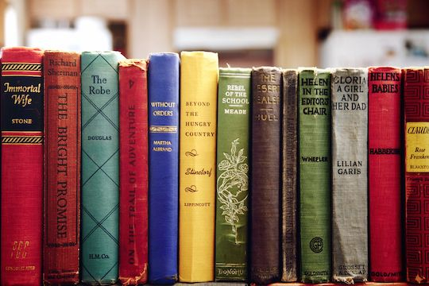

Read Books
Finally,rainy days are a great opportunity to read all sorts of books from fantasy to non fiction, from mystery to graphic novels.

- Fantasy including: Harry potter, Game of Thrones, and Lord of the Rings
- Non-Fictions! If you don't know where to start when trying to find these genre of books, try the Who Was books. For example: Who Was Walt Disney, Who Was Princess Diana, and Who Was Albert Einstein
- Mystery including: Nancy Drew, Boxcar children, and if you want a longer more adult book you can try One of Us is Lying.
- And finally,one of my favorite genre of book, Graphic Novel. Some of my favorites are Pashmina, Smile, and Drama.